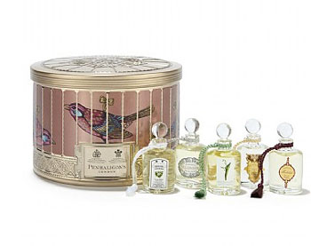
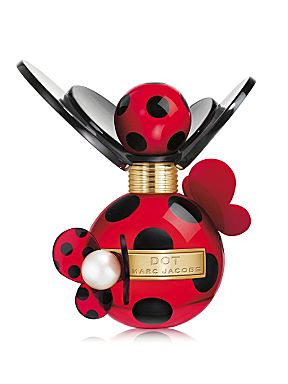
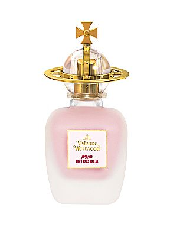

1.
다시 버섯머리로 컴백^^**
(이게 머리가 이상한건가 아닌가;; 긴가민가하면서;;;
위로의 저녁을 먹었건만 역시 내가 맞았어 ㅜㅜ)
우선 긴머리가 답답해서 급한맘에 짧게자르긴했는데
자르고나서도 이런거 엔간해서는 신경안쓰는
나조차도 이사람 넘 못하는거 같다 ㅡㅡ;;
– 라고 느꼈더랬다;;
다음날 일어나보니 당췌 (머리가 자랄동안)어떻게 수습하고
다녀야할지 감도안와서 ㅡㅡ;;; 그냥 포기하고다녔는데
11월말에 긴머리몬해!! 갑갑시려워!!를 외치면서
다시 짧은 버섯머리로.......OTL
머리기르긴 글렀구먼요;;
이번에 머리잘라주신 분도
보자마자 이거 머리 누가이렇게 해놨냐고 ㅡㅡ;;;;
제...제길 ㅡㅜ
뒷모습을 본 친구의말을 빌리자면 머리끝이 완전 삐뚤빼뚤;;;
전문가가 아니라도 누구나 '심하다'라고 느낄정도;; 크흑;;
하지만 머리가 심하게 직모라;; 너무 직모라;;
일케 짧게 커트쳐놓으면 바로 쵸딩포쓰ㅠㅠ
머리자르자마자
아 시원타 + 립스틱 부지런히 바르고 다녀야겠군
요 생각이 동시에들었다-_-;;
그리고 최근 백화점에서 옷구경하고있는데
어떤 영쿡총각이 수줍게 다가와서
나에게 학생카드있냐고 묻는상황이 발생 ㅜㅜ
(학생카드있음 TopShop/River Island 등등 할인되는 곳이 꽤있다)
으으 ㅜㅜ 화장열심히 하고다녀야겠어요;;
2.
뜬금없이 향수에 관심이 간다
정말정말정말 내 관심외 였는데 ㅡㅡ;
스위치'온'을 시킨건
모스키노의 라이트 클라우드

열심히 사용중
심지어 오른쪽 바디로션은 끝까지 다 썼어;;
(바디로션도 잘 사용안해서;; 이제껏 구입해서
끝까지 다 써본적이 없당;;;)
근데 영쿡에 이거 다른시리즈는 들어와있고
왜 얘만 매장에 없는겨;;;;

Penhaligon's / 미니어쳐 컬렉션
우연히 매장디스플레이에서 보구
헉!!! 귀여워!! 패키징 너무귀여워!! 어벌벌;;
이었지만 향이 의외로 내 취향아 아니라 패스;;;;;
그리고 최근 관심가는건

Marc Jacobs / Dots
얘랑

요거 ㅎㅎ
Dots는 처음봤을때
으악 생긴게 왜저래 싶었는데
향이 넘 내취향^^**
3.
심플라이프를 외치면서 진짜 많이도 버리고/팔았는데
이 와중에 또 위시리스트는 생기는군욤 ㅡㅡ;;
언제 해탈할련지;; 쩝;;
그래도 하나 깨달은게 있다면
옷/레깅스/스카프/브로치/악세서리 등등 정말 과감하게 처분했는데
평소 옷입고 댕기는거에 아무런 영향을 주지 않는걸보니
정말 사용안하고 쌓아만놓은게 많았던게야;;;;
.........반성합니다OTL